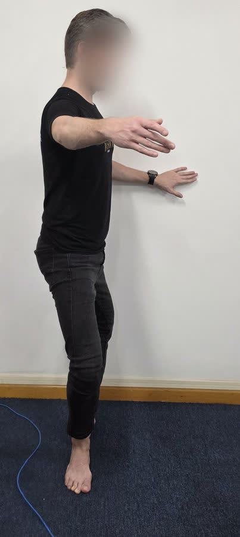
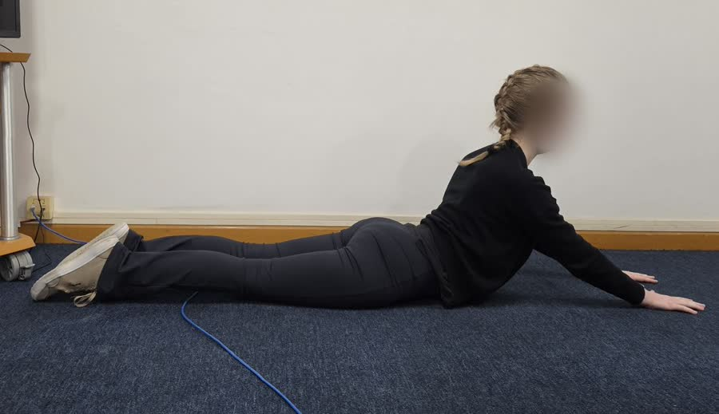

Curvatura do pé
O arco do peito do pé em ponta, numa foto lateral.
App para bailarinos · em breve
Fotografe o exercício e o Eixo mostra a medida, explica o que ela significa e sugere o que praticar. Tudo no seu celular, entre uma aula e outra.
Cada análise mostra como fotografar, com um exemplo de enquadramento.
A análise acontece no próprio aparelho, em segundos. A foto não é enviada a nenhum servidor.
Você vê a medida e a faixa, entende o que ela quer dizer e recebe exercícios para praticar.
O arco do peito do pé em ponta, numa foto lateral.

A profundidade da descida e o alinhamento do joelho com o pé.

Quanto o tronco sobe, com o quadril apoiado no chão.
Em desenvolvimento
Estamos construindo estas funções. A sua inscrição nos ajuda a decidir o que fazer primeiro.
Peça a um professor aprovado pelo Eixo que confira sua foto e escreva um parecer.
Exercícios para fazer sozinho, a partir das suas medidas.
Histórico salvo na sua conta, para comparar foto a foto ao longo dos meses.
Um cartão com a sua evolução para os stories, sem mostrar a sua foto.
Quem se inscrever recebe o convite para testar o app primeiro. Leva menos de um minuto.
Tem menos de 18 anos? Peça ao seu responsável para fazer a inscrição.
Vamos avisar por e-mail quando o app estiver pronto para testar. Obrigado por ajudar a construir o Eixo.
Não. O app complementa a aula: mede o que aparece na foto e explica o resultado. Correções e decisões sobre o treino continuam com o seu professor.
Não. É uma medição geométrica experimental feita a partir da foto. Não avalia talento, força, dor ou risco de lesão.
No protótipo, a análise acontece no seu aparelho e a foto não é enviada. No app, você vai decidir o que guardar na sua conta e poderá apagar tudo.
A ideia é que as análises tenham uma opção gratuita. O preço das funções pagas, como a revisão por professor, ainda está em definição; por isso fazemos a pergunta no formulário.